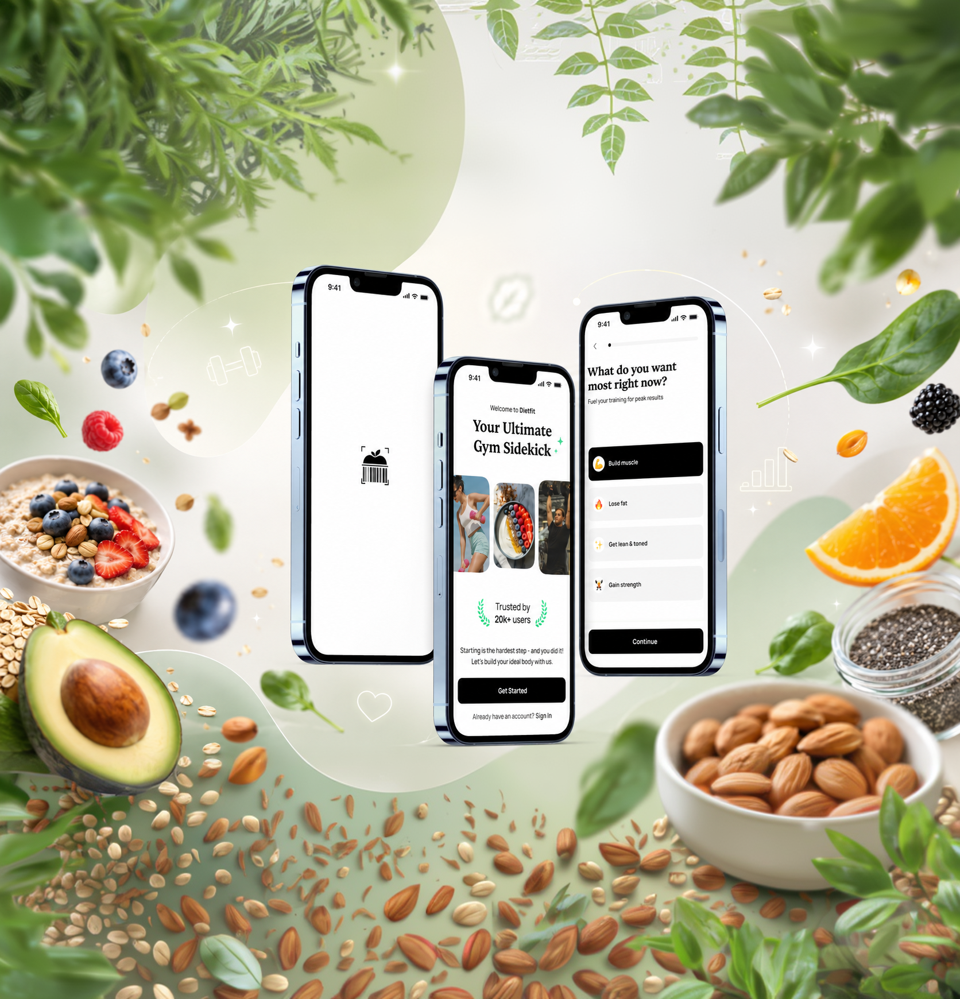
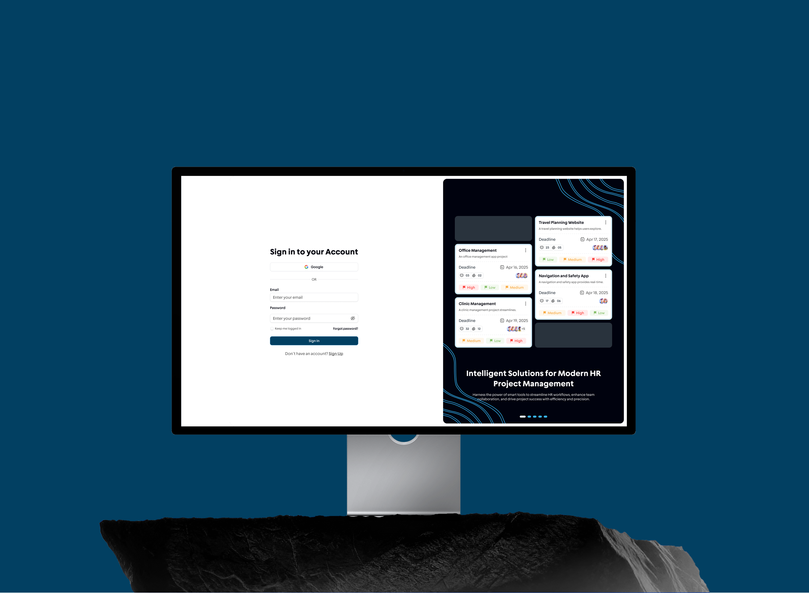

01 - Research
Research
AI transcribes sessions and clusters the raw notes into themes.
I decide what’s real signal — and what it means for the product.
Product & UX/UI Designer — Da Nang, Vietnam
I turn complex products into interfaces people understand at a glance.
About Me

I’m Chuong, a Product Designer based in Da Nang.
I help turn complex ideas into clear, usable, and well crafted digital experiences.
My work combines product thinking, visual craft, and technical understanding to design interfaces that are thoughtful, practical, and easy to build.
I care about creating products that feel simple on the surface, but are carefully structured behind the scenes.
Experiences
Keep scrolling
2022
Where I learned to move fast across very different products.
2024
Where I learned rigor — across a language and a market gap.
2026
Where I went deep — and grew into product.
Workflow with AI
I work with AI the way I design AI — fast on volume, human on judgment. Four stages, one rule: AI drafts, I make the call.
01 - Research
AI transcribes sessions and clusters the raw notes into themes.
I decide what’s real signal — and what it means for the product.
02 - Explore
AI generates layout variations, alternative flows, and copy options.
I decide the direction that fits the user and the brief.
03 - Craft
AI drafts microcopy, fills realistic content, and speeds repetitive states.
I own the craft, spacing, consistency, and voice.
04 - Ship
AI drafts component docs, edge-case lists, and acceptance notes.
I verify them against the real flow — and add what AI missed.
Projects
The work behind the thesis — each one simple on the surface, carefully structured underneath.
Team & I designed an AI-powered calorie tracking app that allows users to scan their food, estimate calories, and monitor their nutrition progress more easily.
View Detail
One source of truth for managers: people, projects, and workload together.
View Detail
People, work, schedules, and contracts — in one mobile place.
View Detail